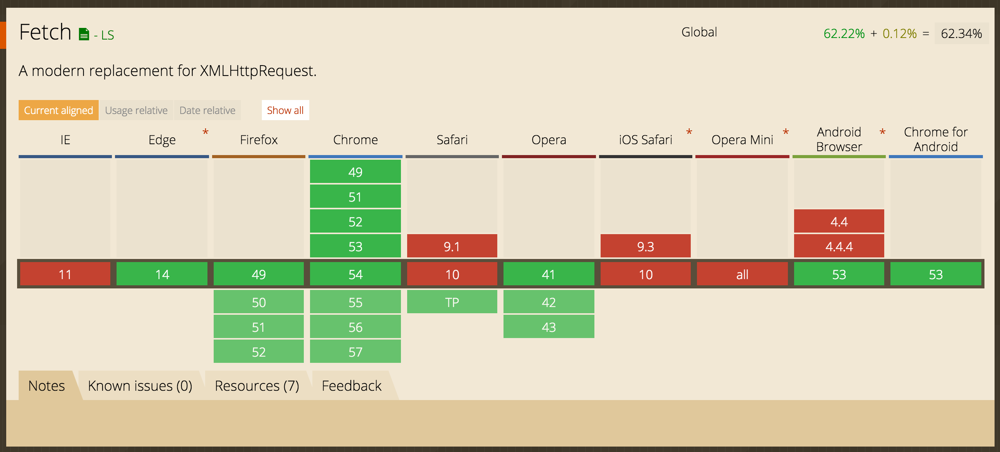

Review
- What is component state?
- When do we know when to use component state?
- How do we handle click events? How about keyboard events?
Working with APIs
API stands for "Application Programming Interface", which is more or less a set of defined functionality. This funcationality can come from a library that you import or natively as something that already exists in the browser. Every API comes with documentation.
In recent years the term has become popular due to JSON APIs and the the high use of mobile devices. By having a JSON API for your information many devices and websites can tap into it and use it. For example when you view twitter from a mobile app or the website, you still see the same data. This is because both applications have been built to consume an external API for the data.
Fetch API
This is a modern replacement for XMLHttpRequest which is the original implementation of making HTTP requests in the browser.
Fetch is not fully implemented and will to be used with a polyfill will need to be imported by including the following script in the header.
<script src="https://cdnjs.cloudflare.com/ajax/libs/fetch/1.0.0/fetch.min.js"></script>
Paste the following code in the console of your browser and see the output.
fetch('https://www.reddit.com/r/all/search.json?q=javascript')
.then(function(response) {
response.json().then(function(data) {
console.log('data', data)
});
});
You see something, right? That's the response! You've successfully communicated with the reddit databases.
Building a component with response data
Making a request everytime we render wouldn't be very performant. For advanced use cases react components provide us with lifecycle methods. Typically we use `componentWillMount` for initializing requests. Once we get a response we can then set that to state.
JS Bin on jsbin.comCW/HW
- Visit discogs.com
- Search for your favorite artist and go to their profile. You will notice the URL will have a number along with a name of the artist.
- In a component <Artist/> you will make a fetch for the artist's releases when the component mounts. This component will take an "id" as a prop. This component will have a pending state while the data is fetching.
fetch(`https://api.discogs.com/artists/${this.props.id}/releases`)
.then(response => response.json().then(data => this.setState({data})));
http://discogs.com/ + artistId + /release/ + id
Next Week!
- ES6 + Web storage